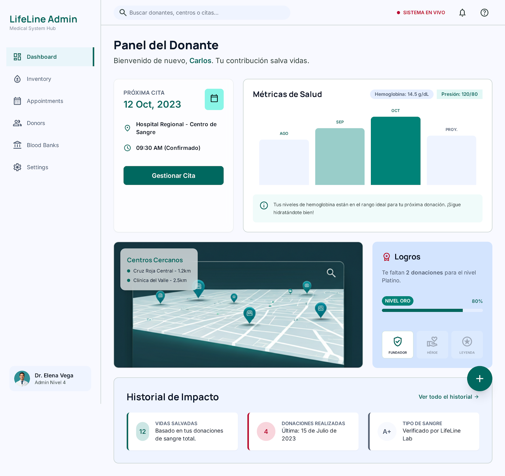
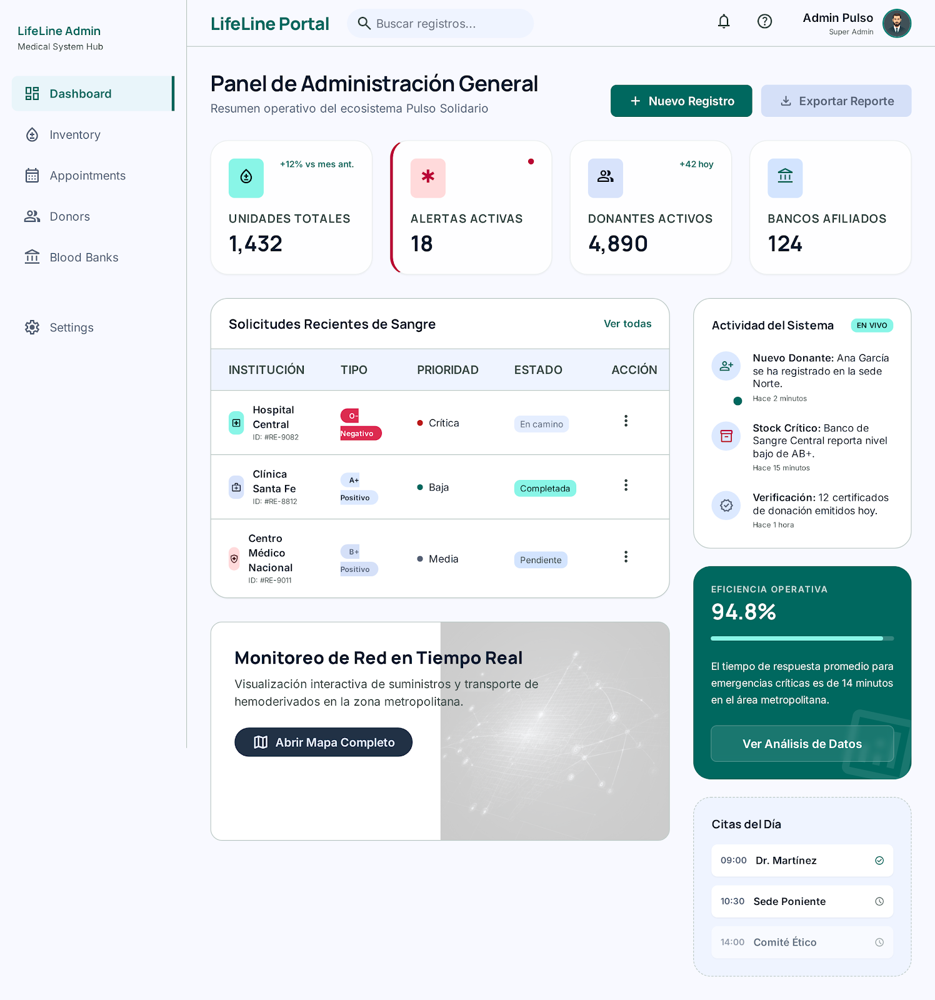
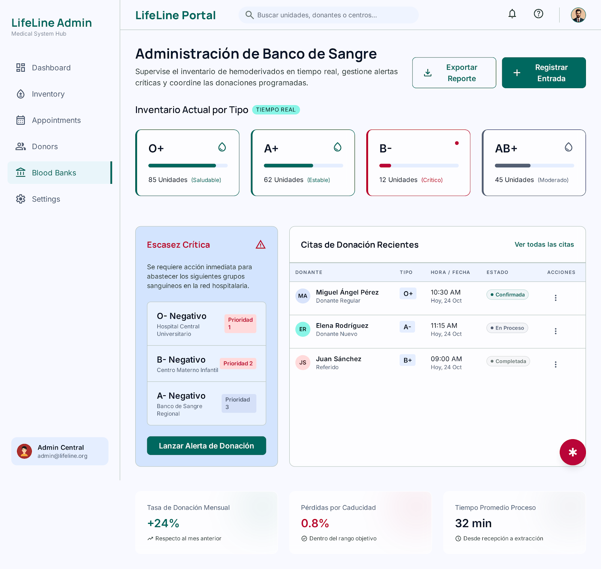

Maquetas HTML / CSS
Tres pantallas estáticas construidas con HTML semántico y Bootstrap 5 sobre un sistema de diseño basado en tokens.

Panel del Donante Próxima cita, métricas de salud, logros, centros cercanos e historial de impacto.
Panel de Administración General KPIs operativos, solicitudes de sangre, actividad en vivo y eficiencia.
Administración de Banco de Sangre Inventario por tipo en tiempo real, escasez crítica y citas de donación.